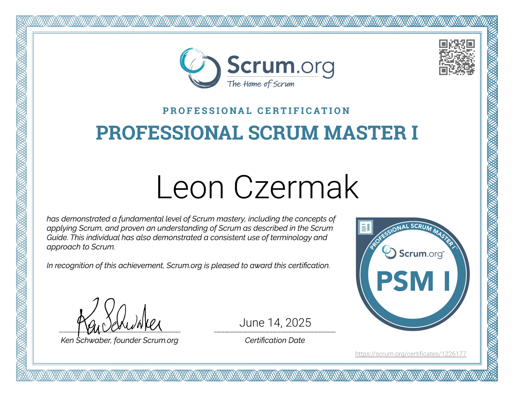
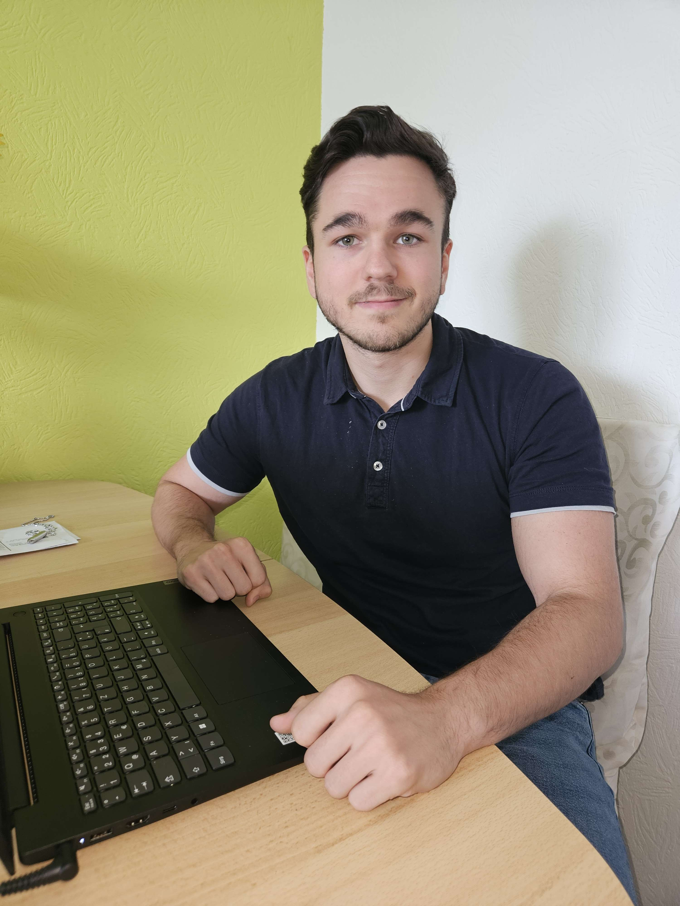
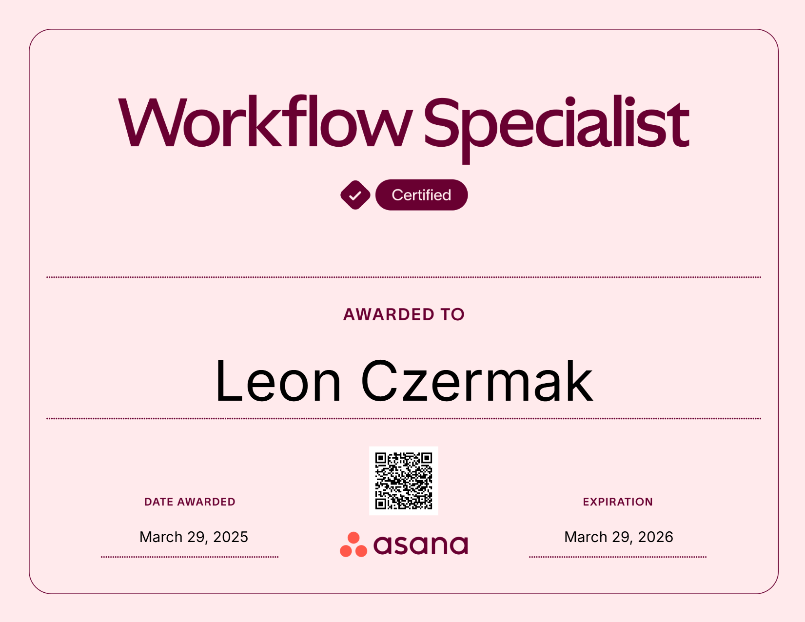
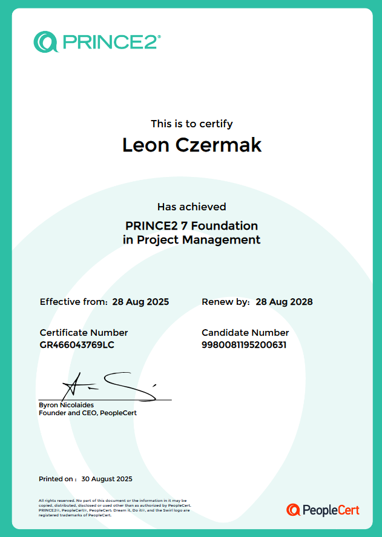
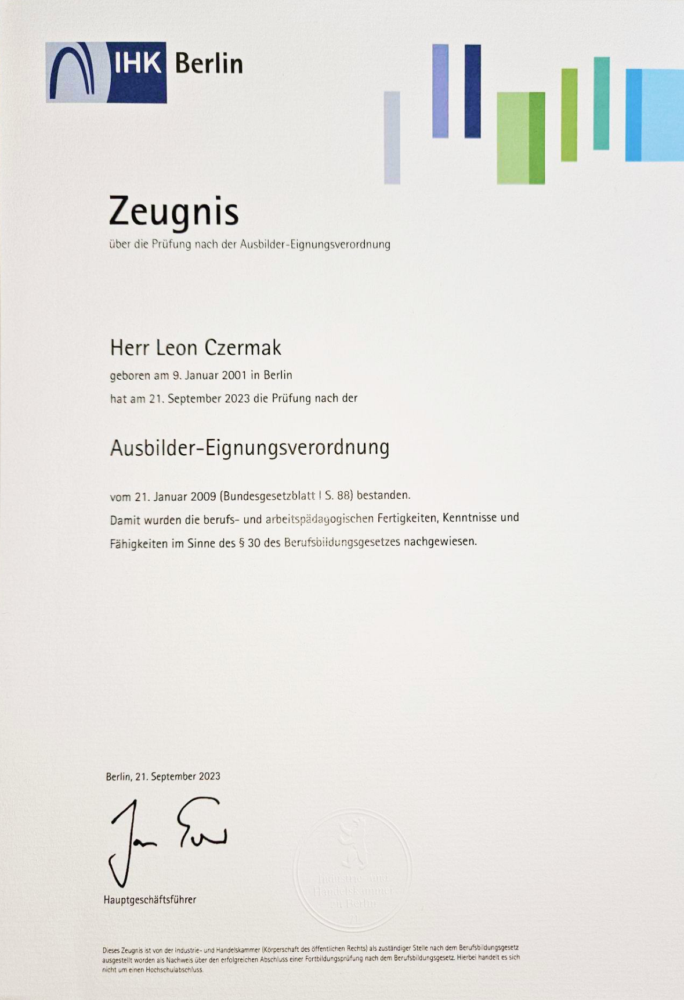

PSM I
Deep understanding of Scrum principles and the ability to apply agile practices to lead teams to deliver high-value outcomes. I'm skilled in facilitating collaboration, removing impediments and driving continuous improvement.
Berlin, Germany
Projectmanager with expertise in marketing and software.
Over the past years, I’ve led projects from initial concept to successful launch. I've used classic project management principles like PRINCE2 and agile frameworks like Scrum. My background stems strong in marketing communication, software developement and partner management.
My experience spans strategic planning, stakeholder management and cross-functional coordination while working closely with IT/software teams, partners, executives and creative departments. Always to ensure every project is on time, within budget and brings added value to the company, it's customers and employees.
From designing and executing campaigns at MAGIX Software GmbH to developing process optimizations; I combine structure with creativity to deliver measurable results.
I’m also passionate about continuous learning; holding certifications in PRINCE2, as a Professional Scrum Master, Asana Workflow Specialist and IHK-certified instructur.
Besides work, I love to challenge myself in different sports, cultivating plants or create games with my friends to play with.


Deep understanding of Scrum principles and the ability to apply agile practices to lead teams to deliver high-value outcomes. I'm skilled in facilitating collaboration, removing impediments and driving continuous improvement.

Expertise in designing, optimizing, and automating workflows within and outside of Asana to improve team efficiency. I have the ability to translate business needs into practical, scalable task management solutions.

This foundates my understanding of the PRINCE2 methodology. It's covering its principles, themes and processes. I can manage projects effectively using a structured approach, optimizing efficiency and alignment with organizational goals.

Qualification to train apprentices according to German vocational standards. Covers pedagogical methods and legal frameworks to transfer knowledge in professional settings.